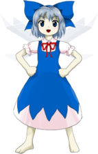

Título: Touhou Kishinjou ~ Double Dealing Character
Desenvolvedora: Team Shanghai Alice
Criador: ZUN
Data de lançamento: 12 de agosto de 2013
Plataforma: PC (Windows)
Gênero: Shoot 'em up (danmaku / bullet hell)
Descrição:
Touhou 14 é o décimo quarto jogo principal da série Touhou.
A história gira em torno de objetos que começam a agir por conta própria,
como se tivessem ganhado consciência.
Armas, ferramentas e até itens comuns passam a se rebelar contra seus donos.
Estranhos acontecimentos começam quando armas e utensílios despertam misteriosamente, movidos por uma energia desconhecida.
Reimu Hakurei, Marisa Kirisame e Sakuya Izayoi partem para investigar o incidente, já que até mesmo seus próprios equipamentos começam a agir de forma estranha.
Durante a jornada, elas descobrem que o poder por trás dos eventos vem do lendário Martelo Mágico, um artefato capaz de conceder desejos.
A responsável pela rebelião é Seija Kijin, uma amanojaku que deseja inverter a ordem natural e criar um mundo onde os fracos dominem os fortes.
Ela utiliza o poder do martelo junto com Shinmyoumaru Sukuna, uma pequena princesa descendente do povo dos polegares, para transformar ferramentas em tsukumogami.
Após a batalha final, o poder do martelo é contido, e a revolta dos objetos chega ao fim, restaurando o equilíbrio em Gensokyo.
O jogo introduz o sistema de armas possuídas, onde diferentes equipamentos oferecem vantagens e alteram o estilo de disparo durante a campanha.
Reimu Hakurei (sacerdotisa do Santuário Hakurei)
Marisa Kirisame (maga humana)
Sakuya Izayoi (empregada da Mansão Scarlet Devil)
Cada personagem possui diferentes tipos de armas, que influenciam o dano, alcance e comportamento dos disparos durante o jogo.
